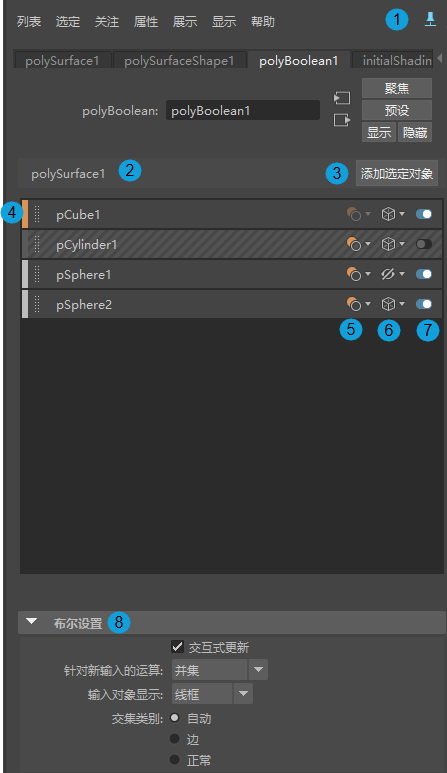
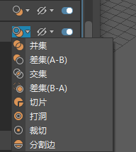
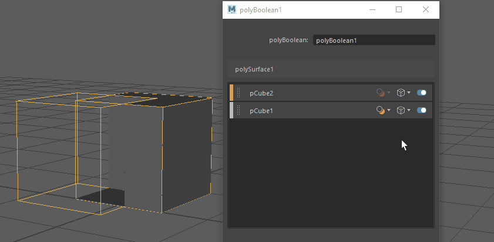

- 在选定布尔对象后，打开“属性编辑器”(Attribute Editor)，然后选择 polyBoolean 节点。
布尔堆栈是用于编辑布尔的集中位置。可以使用这些选项实时编辑输入对象并预览场景中可能发生的更改。输入对象显示为层，以便于组织和管理运算。可以使用层来更改输入对象的布尔运算和显示模式，或切换是否包含在布尔计算中。
注： 至少需要添加两个输入对象，才能使用布尔堆栈中的选项。
布尔堆栈界面

| # | 元素 | 描述 |
|---|---|---|
| 1 |
固定选项卡 |
使选定选项卡在“属性编辑器”(Attribute Editor)中保持可见，即使您更改了场景中的选择也是如此。请参见使用布尔堆栈。 |
| 2 |
结果对象 |
布尔运算的结果对象名为 polySurface#。此名称显示在布尔堆栈和“大纲视图”(Outliner)中。 |
| 3 |
添加选定对象(Add Selected Objects) |
将选定的“视口”(Viewport)对象添加到布尔堆栈。 若要使用此选项，需要单击 提示： 默认情况下，新的输入对象将作为“并集”(Union)运算添加到节点。从“设置 > 针对新输入的运算”(Settings > Operation for new inputs)下拉菜单中选择一种运算，设置默认运算。选择默认值后，它将应用于添加到节点的任何新输入对象。请参见将输入对象添加到现有布尔节点。
|
| 4 |
主层 |
堆栈中的顶层。主层是布尔运算中的第一个选定对象。
提示： 可以将每个后续层视为顺序布尔运算。例如，首先计算顶层，然后计算其下一层，依此类推。
|
| 5 |
布尔运算 |
更改选定层的布尔运算。 主层不与任何运算关联，无法更改其布尔运算。可以更改主层下方任何层的布尔运算。 有关每个运算的详细信息，请参见布尔运算。  |
| 6 |
显示模式 |
选择选定层的显示模式。

注： 在布尔堆栈中隐藏对象也会在“大纲视图”(Outliner)中隐藏它，反之亦然。
注： 默认情况下，将在“线框”(Wireframe)模式下添加新输入对象。从“设置 > 输入对象显示”(Settings > Input object display)下拉菜单中选择显示模式，以设置默认的显示模式。选择默认值后，它将应用于添加到节点的任何新输入对象。
|
| 7 |
切换层包含 |
切换层包含。禁用的层不包含在布尔计算中。 |
| 8 |
布尔设置 |
使用以下选项可自定义选定节点的布尔运算：
注： 这些选项也可以在“布尔运算”(Boolean Operation)选项中设置，在这里，它们将全局应用于所有布尔节点。布尔堆栈中的设置允许您在节点级别选择默认值，从而替代在“布尔运算”(Boolean Operation)选项中设置的任何默认值。
|
 以固定布尔堆栈，或单击
以固定布尔堆栈，或单击